4 The Ford Family Foundation
4.1 How interested are you in engaging with the alumni association?
Note: The percentage shown are those who said they are “somewhat interested” or “very interested.”
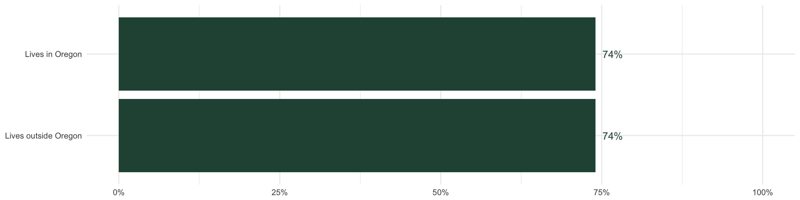
4.1.1 By subgroup: Lives in Oregon
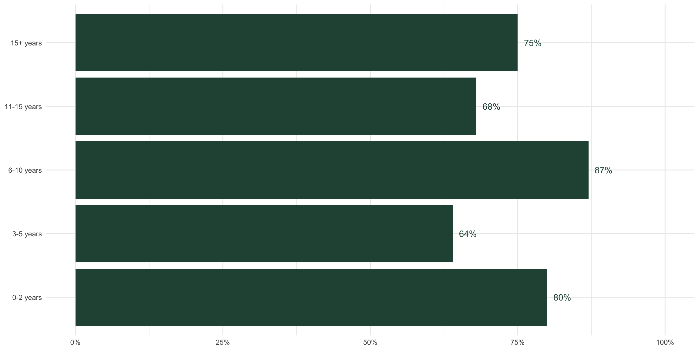
4.1.2 By subgroup: Rural
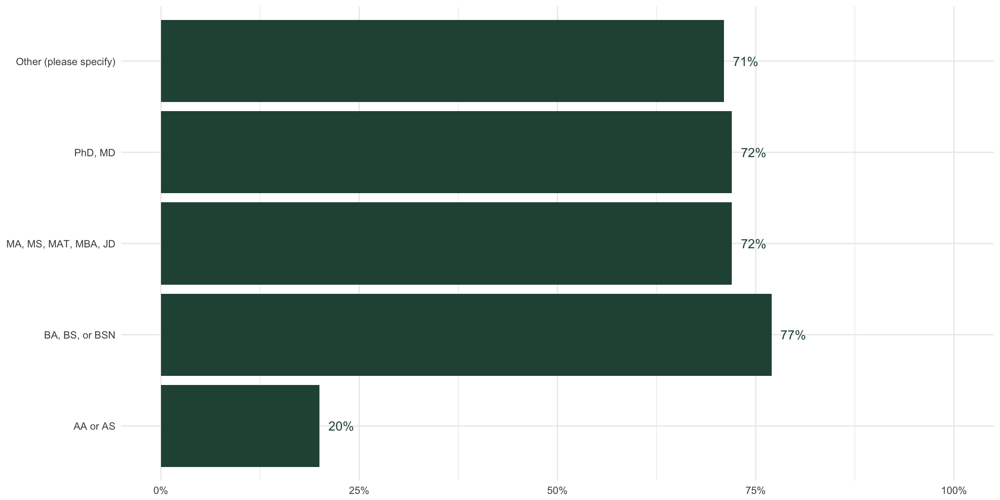
4.1.3 By subgroup: Years since graduation
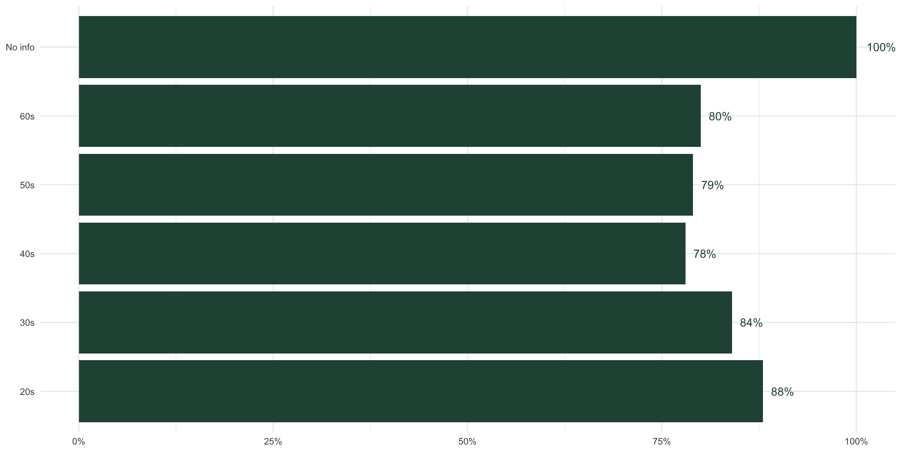
4.1.4 By subgroup: Highest level of education
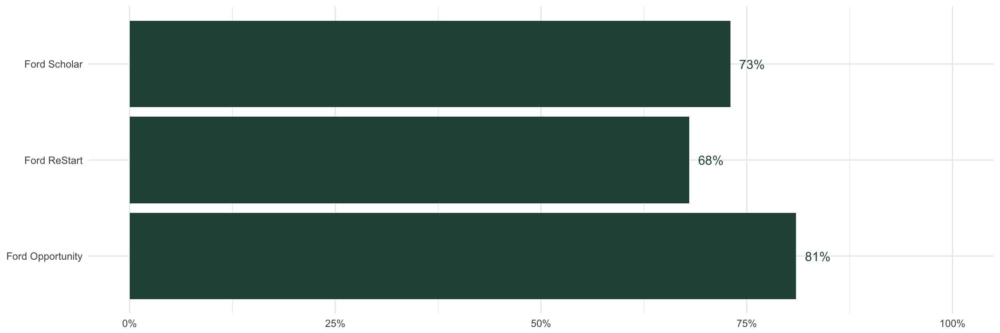
4.1.5 By subgroup: Age
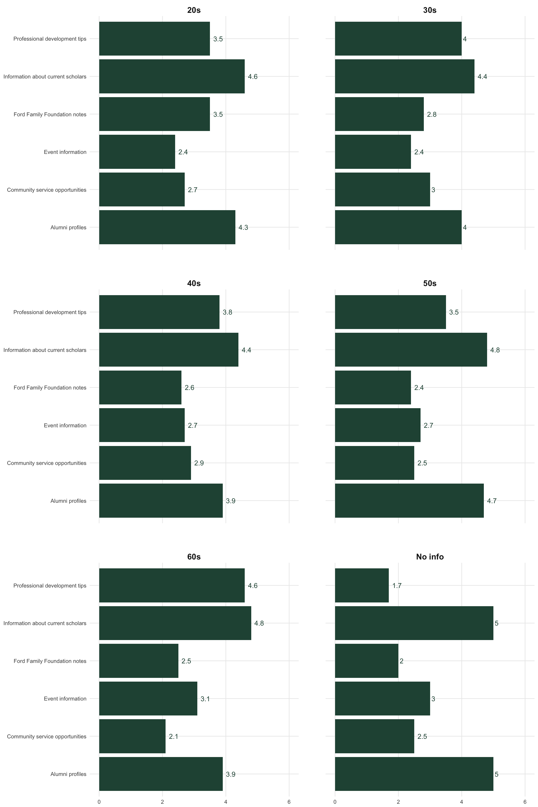
4.1.6 By subgroup: Scholarship type
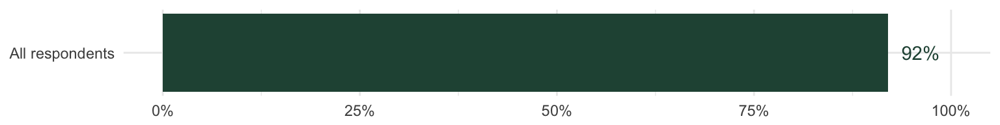
4.2 How interested are you in being engaged with The Ford Family Foundation?
Note: The percentage shown are those who said they are “somewhat interested” or “very interested.”
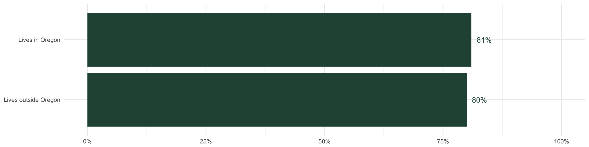
4.2.1 By subgroup: Lives in Oregon

4.2.2 By subgroup: Rural
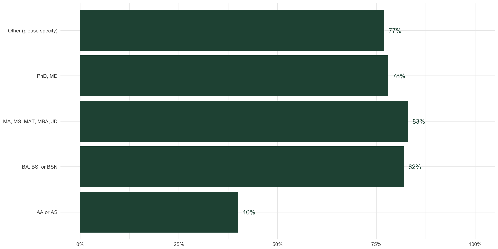
4.2.3 By subgroup: Years since graduation
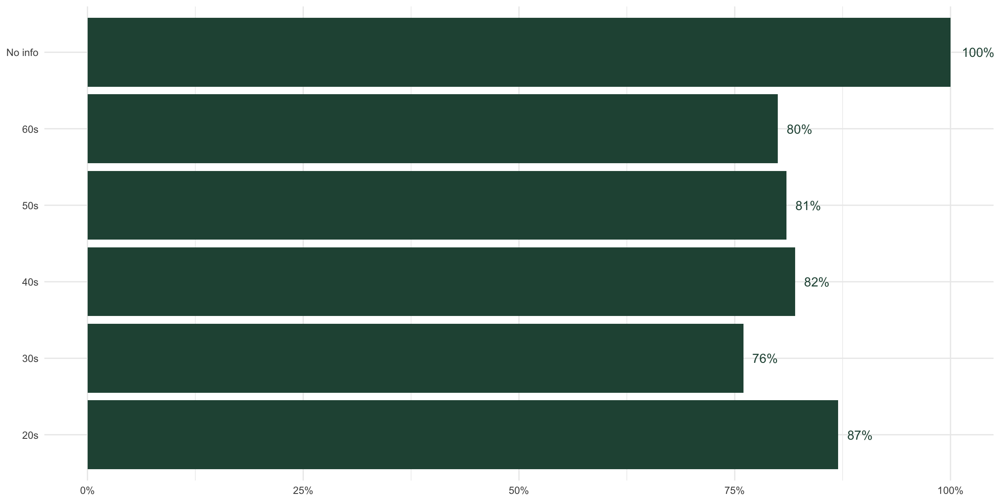
4.2.4 By subgroup: Highest level of education
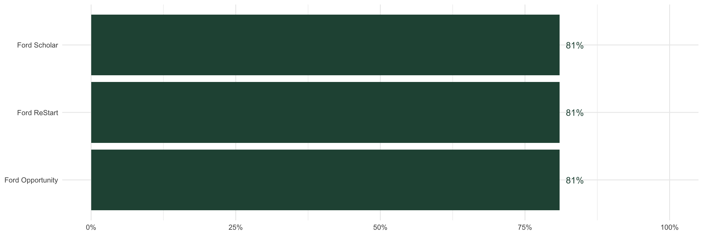
4.2.5 By subgroup: Age
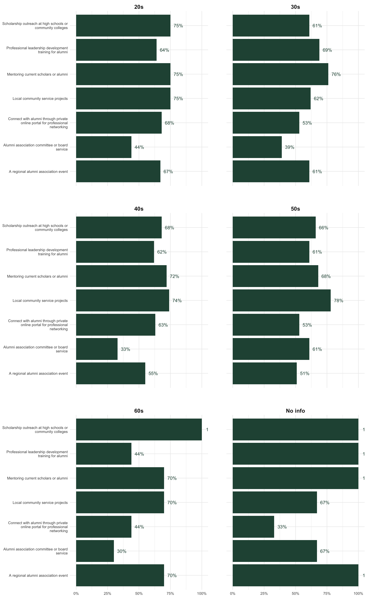
4.2.6 By subgroup: Scholarship type
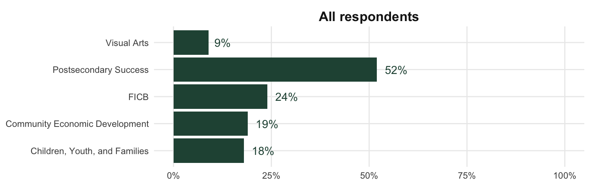
4.3 How aware are you about the work of the departments at The Ford Family Foundation?
Note: The percentage shown are those who said they are “fairly aware” or “know this work well” for each department.
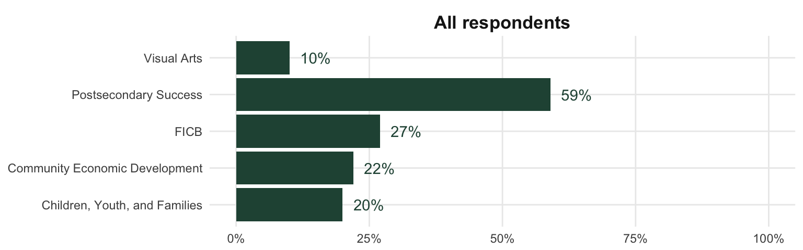
4.3.1 By subgroup: Lives in Oregon
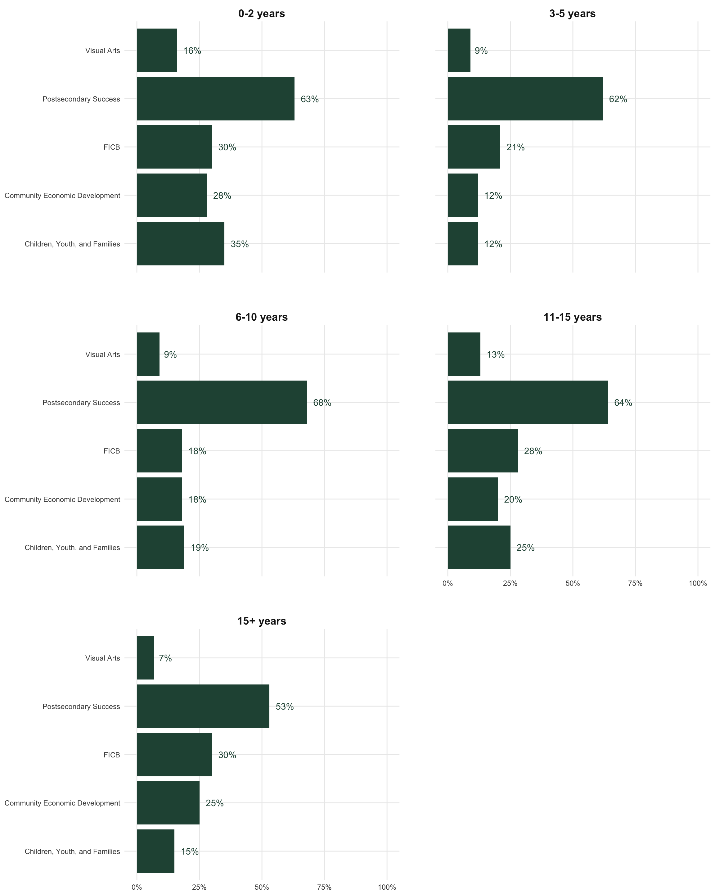
4.3.2 By subgroup: Rural
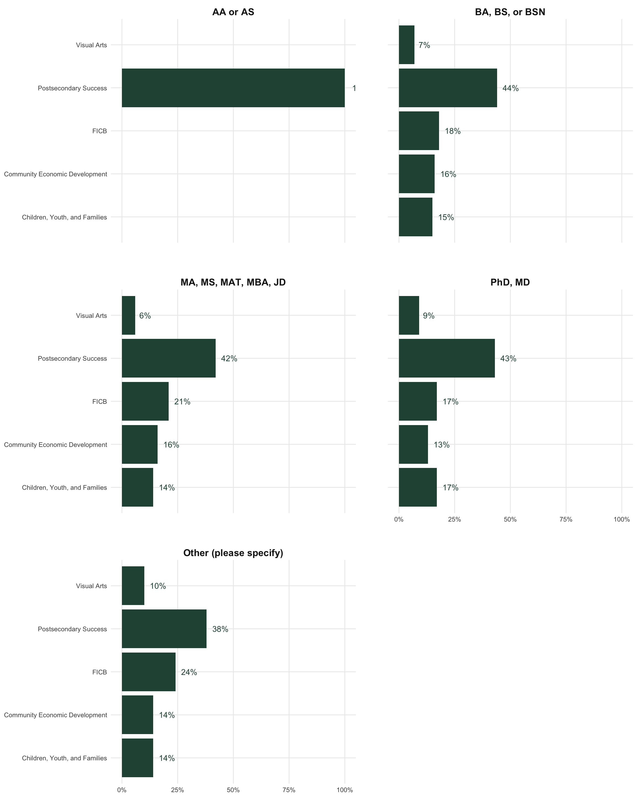
4.3.3 By subgroup: Years since graduation
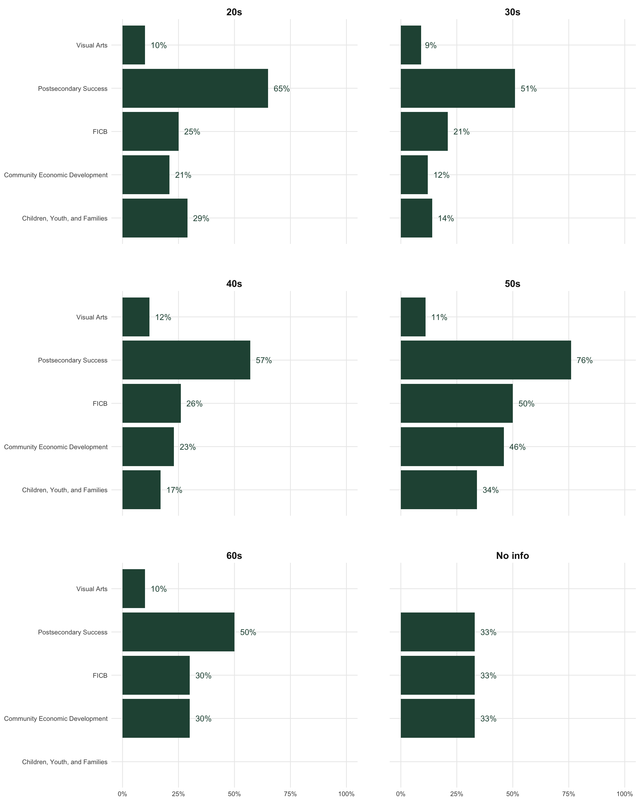
4.3.4 By subgroup: Highest level of education
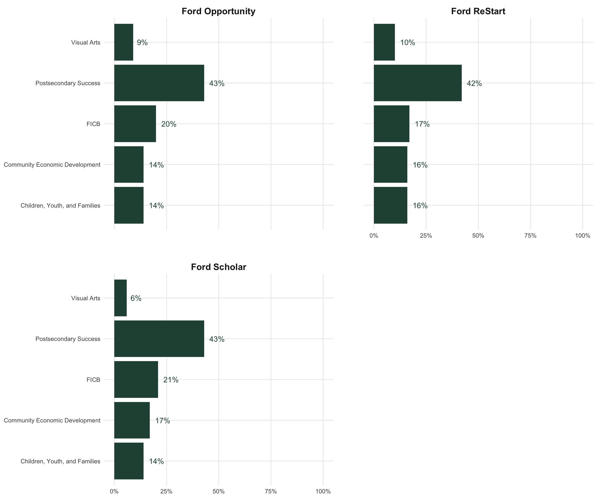
4.3.5 By subgroup: Age

4.3.6 By subgroup: Scholarship type
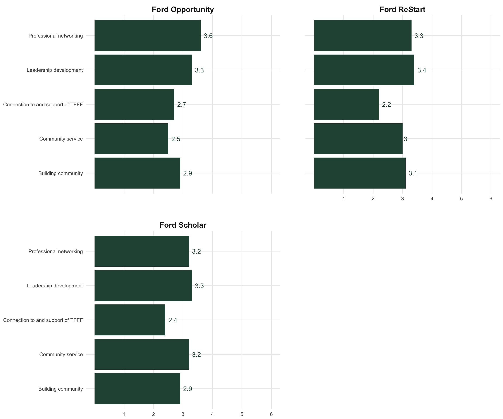